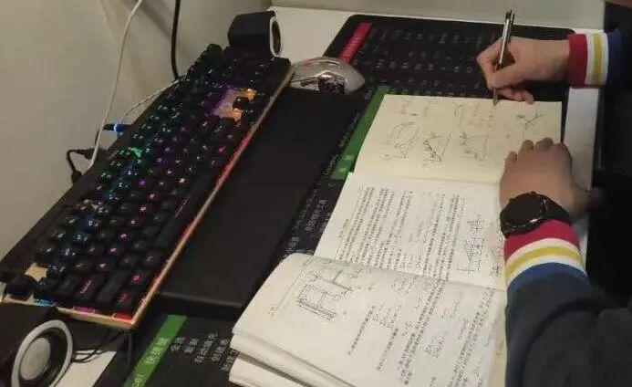
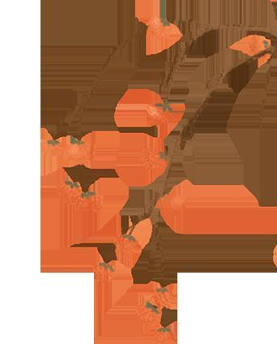
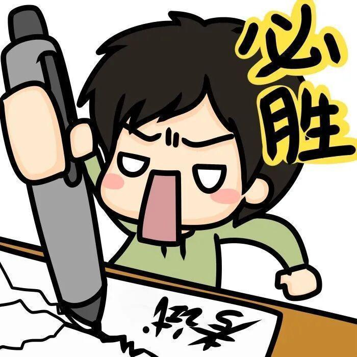

期末|执笔为剑，迎战期末
一个人几乎可以在任何他怀有无限热忱的事情上成功。
——查尔斯·史考伯
时针滴答流转
学期也接近尾声
带来了考试的紧迫
或忙碌 或期待
这个期末 我们一起度过
高等数学 微积分
线性代数 常微分方程
不等的方程 待解的参数
滴答的秒针 飞舞的笔尖
你要相信 胸中有丘壑
你要实现 笔下有乾坤


深夜的炭笔在发光
沙沙的笔尖在唱歌
你看
那是如诗歌般纯粹
却又寄意深远的绘画啊



昂首挺胸，谁知你也曾匆匆
满面春风，考场把笔论英雄
昨日的苦功
是今日的笑容

备考攻略：

1
提前规划，避免错过考试。
2
必备物品要带好----校园卡、身份证、2B铅笔、橡皮、中性笔。
3
考试状态要调整。提前调整生物钟，考场不犯困。简单题目不粗心，遇见难题不紧张。
4
诚信考试不作弊。
5
认真复习底气足。合理安排复习时间，对知识的牢牢掌握才是考试必胜的绝招。
沉着冷静 温故知新
厉兵秣马 调整状态
在考场发挥最好的水平

没有困难的期末考
只有聪明的学习人
无论哪种姿态
落笔都是收获的痕迹
拥抱一学期的成果
以梦为马，期待花开
在此小编祝各位SYLUer
都能学有所获，取得理想成绩！
—— E N D ——
推文：阿橦木
审核：xx敏